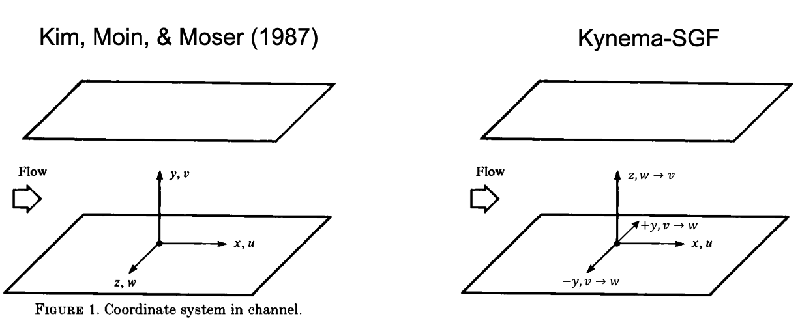
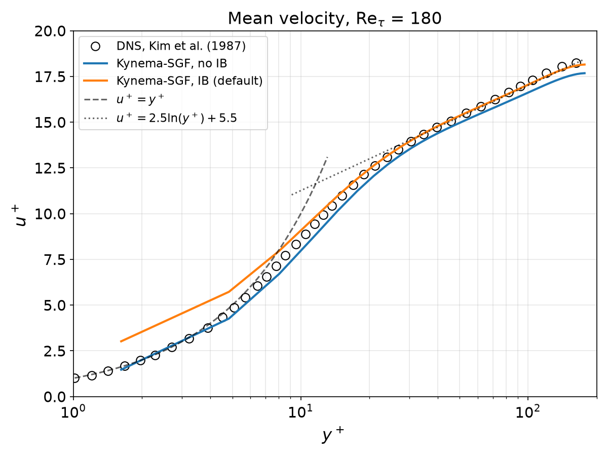
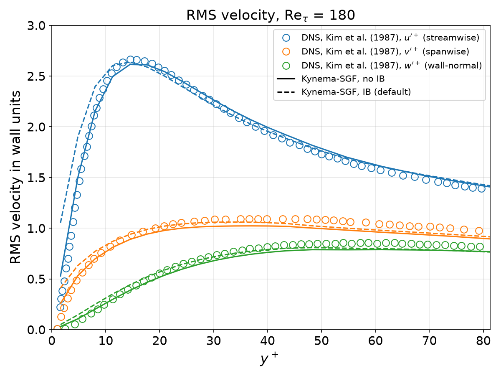
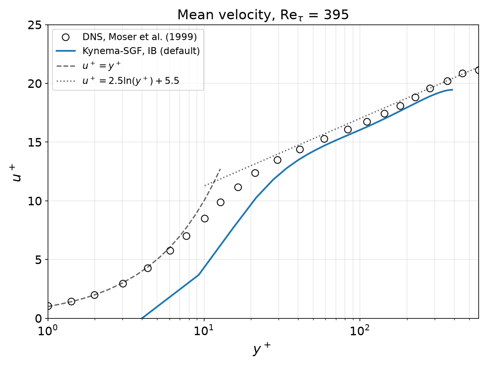
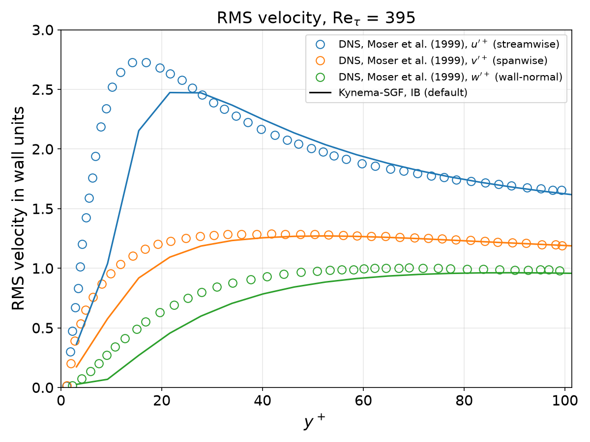

Turbulent channel flow with immersed boundaries
This validation case compares wall-resolved large-eddy simulations (LES) of
pressure-driven turbulent channel flow with direct numerical simulation (DNS)
data at friction Reynolds numbers \(Re_\tau = 180\) and \(Re_\tau = 395\). The
channel walls are represented with ChannelBuilder immersed boundaries (IB)
and the DragForcing wall model. A channel with no-slip domain walls and no
IB provides a solver reference at \(Re_\tau = 180\).
Contents
Channel configurations
Flow is in the \(x\) direction, \(y\) is spanwise, and \(z\) is wall-normal. The DNS coordinate system uses \(y\) as the wall-normal direction and \(z\) as the spanwise direction, so the DNS \(v\) and \(w\) components correspond to the Kynema-SGF \(w\) and \(v\) components, respectively.

The walls are located at \(z = \pm\delta\), where \(\delta\) is the channel
half-height. The domain is periodic in \(x\) and \(y\). In the no-IB case, the
walls are the no-slip domain boundaries at \(z = \pm\delta\). In the IB cases,
the domain is extended in \(z\) and the ChannelBuilder walls at
\(z = \pm\delta\) coincide with level 0 cell faces. Flow is driven by a uniform
body force
The fluid is air at 101325 Pa and 750 K:
Property |
Value |
|---|---|
Density, \(\rho\) |
0.468793 kg/m\(^3\) |
Dynamic viscosity, \(\mu\) |
3.57816e-5 Pa s |
Subgrid model |
Smagorinsky, \(C_s = 0.1\) |
The flow characteristics follow from:
Quantity |
\(Re_\tau = 180\) |
\(Re_\tau = 395\) |
|---|---|---|
Half-height, \(\delta\) |
0.005 m |
0.01 m |
Domain, \(L_x \times L_y\) |
\(6.24\delta \times 3.12\delta\) |
\(6.24\delta \times 3.12\delta\) |
Friction velocity, \(u_\tau\) |
2.7478 m/s |
3.0149 m/s |
Pressure gradient, \(dp/dx\) |
-709.79 Pa/m |
-426.121 Pa/m |
Body force |
1514.08 m/s\(^2\) |
908.975 m/s\(^2\) |
Viscous time, \(t^*\) |
1.8197e-3 s |
3.3168e-3 s |
Spin-up |
\(40t^*\) (0.072788 s) |
\(70t^*\) (0.232176 s) |
Statistics |
\(10t^*\) (to 0.090985 s) |
\(10t^*\) (to 0.265344 s) |
Each mesh uses one level of refinement near each wall. Grid spacing in wall units is:
Mesh |
\(Re_\tau = 180\) |
\(Re_\tau = 395\) |
|---|---|---|
Level 0 cells, no IB |
\(192 \times 96 \times 56\) |
N/A |
Level 0 cells, IB |
\(192 \times 96 \times 64\) |
\(200 \times 96 \times 72\) |
Level 0 \(\Delta x^+, \Delta y^+, \Delta z^+\) |
5.85, 5.85, 6.43 |
12.32, 12.84, 12.34 |
Level 1 \(\Delta x^+, \Delta y^+, \Delta z^+\) |
2.93, 2.93, 3.21 |
6.16, 6.42, 6.17 |
Level 1 extent from each wall |
\(z^+ \leq 45\) |
\(z^+ \leq 111\) |
In the IB cases, level 1 also covers the solid cells between the wall and the domain boundary.
Validation matrix
Case |
\(Re_\tau\) |
Walls |
Directory |
|---|---|---|---|
No IB |
180 |
No-slip domain boundaries |
|
IB ( |
180 |
|
|
IB ( |
395 |
|
|
The default IB configuration uses the current DragForcing implementation,
with ABL.surface_roughness_z0 = 0.00001. The \(Re_\tau = 395\) employs a wall model by setting ChannelBuilder.initialize_drag_cells = true.
Shared solver settings are in cases/base.inp. Each case directory contains:
inputs.inp, which includesbase.inpand sets the domain, forcing, walls, mesh, stop time, and the plane sampler used to collect statistics. Sampling starts after the spin-up time throughsampling.output_time_delay.
Reference data
The reference data in data/ are DNS profiles from:
\(Re_\tau = 180\): Kim, J., Moin, P., and Moser, R. (1987). Turbulence statistics in fully developed channel flow at low Reynolds number. Journal of Fluid Mechanics, 177, 133-166.
\(Re_\tau = 395\): Moser, R. D., Kim, J., and Mansour, N. N. (1999). Direct numerical simulation of turbulent channel flow up to \(Re_\tau = 590\). Physics of Fluids, 11(4), 943-945.
Re<Re_tau>_MeanVelocity.csv contains \(u^+\) versus \(y^+\). The
Re<Re_tau>_RMS_<component>.csv files contain RMS velocity in wall units
using the Kynema-SGF orientation: U is streamwise, V is spanwise, and
W is wall-normal.
Statistics
The channel_stats plane sampler writes velocity on planes parallel to the
walls every \(0.1t^*\) (sampling.output_time_interval), starting at the end of
the spin-up (sampling.output_time_delay). This gives 100 samples over the
\(10t^*\) statistics window after a \(40t^*\) (\(Re_\tau = 180\)) or \(70t^*\)
(\(Re_\tau = 395\)) spinup. The planes are located at level 1 and level 0 cell
centers between \(z = -\delta\) and \(z = \delta\).
For each plane, the analyzer accumulates the sample count, sum, and sum of squares of each velocity component over all sampled points and all sampler outputs. It combines planes with the same distance from the nearest wall, \(y = \delta - |z|\), and computes
Profiles are scaled with $\(y^+ = \rho u_\tau y / \mu,\)\( \)\(u^+ = \langle u \rangle / u_\tau,\)\( \)\(u_{i,\mathrm{rms}}^+ = u_{i,\mathrm{rms}} / u_\tau.\)$
By default, the friction velocity is computed from the imposed pressure gradient,
With --utau-source gradU, it is instead computed from the wall shear stress
\(\tau_w = \mu\,|dU/dy|_{y=0}\), where the wall gradient comes from a quadratic
fit through the wall and the two planes nearest to it:
Prerequisites
Use the kynema-sgf-env conda environment shared by the immersed boundary
cases. It contains the Python, NumPy, and Matplotlib dependencies required by
the analyzer.
From this directory, create the environment when necessary and activate it:
conda env create -f ../kynema-sgf-env.yml
conda activate kynema-sgf-env
An available Kynema-SGF executable is also required. Solver launch and resource selection are controlled by the user or the target HPC system.
Run the solver
Each case runs in a single job from its case directory. The run spins up the turbulence from a perturbed initial condition and then continues to the stop time; the sampler begins writing statistics data at the end of the spin-up. For example:
cd cases/re180-default
srun -N 2 --ntasks-per-node=50 kynema_sgf inputs.inp
The run writes sampler outputs in post_processing/sampling*/. Samples taken
before the spin-up time are not written.
Check convergence
Statistics are only meaningful once the flow has reached a statistically steady state. If the spin-up is too short, the bulk velocity is still changing during the statistics window and the time averages are biased. Check this with:
python python/drift.py --nprocs 16
For each case, drift.py integrates the plane-averaged streamwise velocity
from wall to wall to get the bulk velocity \(U_b\) of every sampler output. It
then compares the mean \(U_b\) over the first quarter of the outputs with the
mean over the last quarter and prints the change, for example:
re180-default: U_b 41.00 -> 41.20 m/s (+0.5%) over the first and last 25 outputs
A change of more than a percent or two means the spin-up should be extended.
Restart from the latest checkpoint with io.restart_file, and increase
time.stop_time and sampling.output_time_delay. Move the old sampling*
folders aside and delete particle_stats.txt before reanalyzing.
The sampler outputs of a case are read in parallel, one per worker process, so peak memory scales with the number of workers (about 0.6 GB per worker for \(Re_\tau = 395\)). Options:
--cases re180-no-ib,re395-defaultchecks a subset of cases, which are processed one after another (default: all).--nprocs Nsets the number of worker processes (default:$SLURM_CPUS_PER_TASK, otherwise the number of CPUs). Keep it within the memory of the node.
At least four sampler outputs are required.
Analyze statistics
After the runs complete, run from this directory:
python python/analyze.py
The analyzer reads every completed sampler output in each case’s
post_processing/ directory with a particle reader adapted from
Kynema-SGF’s tools/amrex_particle.py. Cases without sampler output are
reported and skipped. The time-averaged statistics on each sampling plane are
written to cases/<case>/particle_stats.txt; when that file exists, it is read
instead of the sampler output. Delete it to reprocess the sampler output, for
example after rerunning a case. Options:
--cases re180-no-ib,re180-defaultanalyzes a subset of cases.--utau-source gradUcomputes \(u_\tau\) from the wall velocity gradient.--output-dir PATHchanges the output directory.--last-timeuses only the latest sampler output, for debugging. It does not read or writeparticle_stats.txt, and adds a_last-timesuffix to the output file names.
Outputs
Analysis results are written to cases/analysis/ by default:
cases/<case>/particle_stats.txt(in the case directory) contains, for each sampling plane \(z\), the mean and variance of each velocity component averaged over \(x\), \(y\), and time, before the channel halves are folded.<case>_profiles.csvcontains the wall distance \(y\), \(y^+\), \(u^+\), and the streamwise, spanwise, and wall-normal RMS velocity in wall units.re<Re_tau>_mean_velocity.pngcompares \(u^+\) with the DNS data, the viscous sublayer \(u^+ = y^+\), and the log law \(u^+ = 2.5\ln y^+ + 5.5\).re<Re_tau>_rms_velocity.pngcompares RMS velocity components with the DNS data.
The analyzer also prints the number of sampler outputs averaged and the friction velocity used for each case.
Results
\(Re_\tau = 180\)
Mean velocity compared with DNS:

RMS velocity compared with DNS:

\(Re_\tau = 395\)
For this case we use the wall model by setting ChannelBuilder.initialize_drag_cells = true. The wall model is used here because the level 1 mesh only extends to \(z^+ \leq 111\), which does not resolve the viscous sublayer and buffer layer. For non-IB cases, the wall model in Kynema-SGF is only implemented on the lower \(z\) boundary, therefore the non-IB reference is not used included.
Mean velocity compared with DNS:

RMS velocity compared with DNS:
